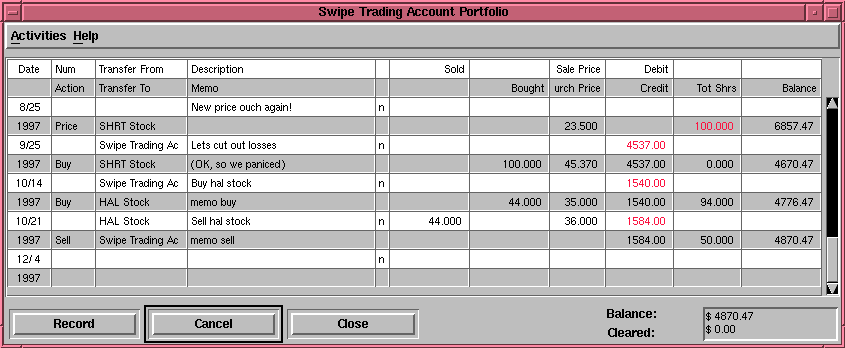

THIS FILE IS ALMOST EMPTY
This is the "Register" or the "Ledger" window. Enter
transactions here. Add more documentation.
Here is a test image:

Reconciliation
At the bottom of the account window, there are two running balances,
the "cleared & reconciled" balance, and the "total" balance... the
"cleared & reconciled" balance should correspond to how much money
the bank thinks you have in your account, and the "total" balance
includes outstanding transactions.
Reconciliation can be done in the
Reconcile Window
Stock Portfolios
You can do stock transaction either from a single-stock window,
or from a portfolio-view window, shown below.

The portfolio ledger can be a bit daunting at first sight.
If you have trouble understanding it, then stick to creating
accounts which have a single stock in them.
Some important points to remember about the portfolio window:
- Its shows all stocks for your portfolio, not just some.
The share amounts shown are for each particular stock.
- Notice that it uses a two line display. Debited
accounts and debited amounts are on the upper line, and
credited amounts and accounts are on the lower line.
- If you buy or sell a stock with money from the brokerage
account, the total balance will not change, since the
value of the stock equals the amount of money exchanged.
- If you buy or sell a stock with money from the brokerage
account, the value of the transaction will appear twice,
once in red, and once in black. If shares are purchased,
the amount of money debited from the brokerage account will be
in red, and the value of the shares in black. If shares are
sold, then value of the shares is in red, and the money
credited to the brokerage account in black.
- If you are having trouble indicating a share purchase/sale
in the portfolio ledger, then make sure that "Transfer From"
and "Transfer To" accounts are in the right order. A
transfer from a stock account is always interpreted
as a sale, even if you entered the data as a purchase.
The vice-versa is also true.
- Someday, X-Accountant will be enhanced with a simplified
portfolio ledger window.